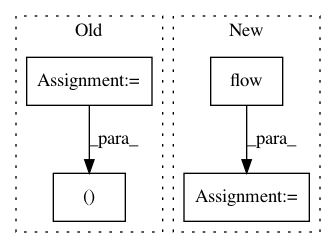

cf0181bb0bf5add0686ca4dd4c03e6fb04a34703,snntoolbox/io_utils/datasets/cifar10.py,,get_cifar10,#Any#Any#Any#,21
Before Change
(X_train, y_train), (X_test, y_test) = cifar10.load_data()
X_train = X_train.astype("float32")
X_test = X_test.astype("float32")
X_train /= 255
X_test /= 255
// convert class vectors to binary class matrices
Y_train = to_categorical(y_train, nb_classes)
Y_test = to_categorical(y_test, nb_classes)
if flat:
X_train = X_train.reshape(X_train.shape[0], np.prod(X_train.shape[1:]))
X_test = X_test.reshape(X_test.shape[0], np.prod(X_test.shape[1:]))
if path is not None:
if filename is None:
filename = ""
filepath = os.path.join(path, filename)
np.savez_compressed(filepath+"X_norm", X_train[::3])
np.savez_compressed(filepath+"X_test", X_test)
// np.savez_compressed(filepath+"Y_train", Y_train)
np.savez_compressed(filepath+"Y_test", Y_test)
return (X_train, Y_train, X_test, Y_test)
After Change
featurewise_std_normalization=gcn,
zca_whitening=zca)
datagen.fit(X_test/255.)
dataflow = datagen.flow(X_test, Y_test, batch_size=len(X_test))
X_test, Y_test = dataflow.next()
if flat:
X_train = X_train.reshape(X_train.shape[0], np.prod(X_train.shape[1:]))
In pattern: SUPERPATTERN
Frequency: 4
Non-data size: 4
Instances
Project Name: NeuromorphicProcessorProject/snn_toolbox
Commit Name: cf0181bb0bf5add0686ca4dd4c03e6fb04a34703
Time: 2016-08-22
Author: bodo.rueckauer@gmail.com
File Name: snntoolbox/io_utils/datasets/cifar10.py
Class Name:
Method Name: get_cifar10
Project Name: masa-su/pixyz
Commit Name: 9a244189f1fe351a4fc4ce47e928bd3b3163fa2e
Time: 2018-07-19
Author: masa@weblab.t.u-tokyo.ac.jp
File Name: Tars/distributions/real_nvp.py
Class Name: RealNVP
Method Name: forward
Project Name: stellargraph/stellargraph
Commit Name: 9d01c3f4b31b4a297c57ff13ab3d986229038b1c
Time: 2020-03-19
Author: Huon.Wilson@data61.csiro.au
File Name: tests/layer/test_knowledge_graph.py
Class Name:
Method Name: test_complex
Project Name: stellargraph/stellargraph
Commit Name: 9d01c3f4b31b4a297c57ff13ab3d986229038b1c
Time: 2020-03-19
Author: Huon.Wilson@data61.csiro.au
File Name: tests/layer/test_knowledge_graph.py
Class Name:
Method Name: test_dismult